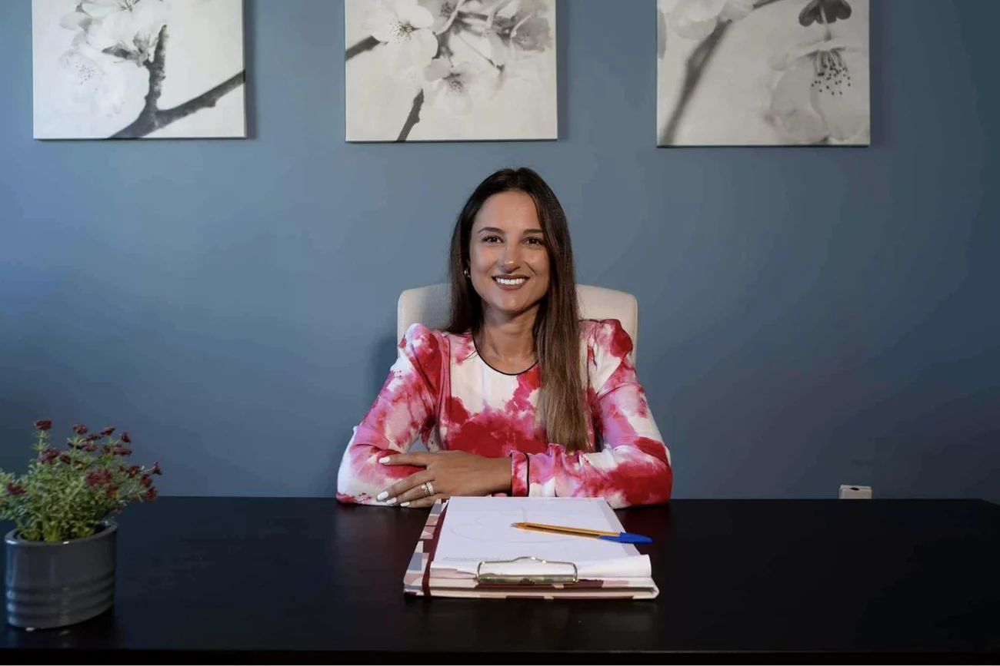

Ψυχολόγοςστην Καλαμάτα.Με χρόνο καιμε μέθοδο.Psychologistin Kalamata.With time andwith method.
Γνωσιακή-συμπεριφοριστική ψυχοθεραπεία για ενήλικες και εφήβους. Δουλεύουμε με συγκεκριμένους στόχους, με εργαλεία που παίρνετε μαζί σας — και με τον σεβασμό που χρειάζεται ο χρόνος σας.Cognitive behavioural psychotherapy for adults and teenagers. We work towards clear goals, with tools you take away with you — and with the respect your time deserves.
Η γνωσιακή-συμπεριφοριστική θεραπεία ξεκινά από μια απλή παρατήρηση: ο τρόπος που ερμηνεύουμε όσα μας συμβαίνουν καθορίζει το πώς νιώθουμε και το πώς αντιδρούμε. Όταν αυτές οι ερμηνείες γίνουν ορατές, μπορούν και να αλλάξουν.Cognitive behavioural therapy starts from a simple observation: the way we interpret what happens to us shapes how we feel and how we react. Once those interpretations become visible, they can also change.
Είναι μια δομημένη, συνεργατική μέθοδος με ισχυρή ερευνητική τεκμηρίωση. Δεν σημαίνει ότι αγνοούμε το παρελθόν — σημαίνει ότι δουλεύουμε συστηματικά πάνω σε αυτό που σας δυσκολεύει σήμερα, με στόχους που ορίζουμε μαζί και επανεξετάζουμε τακτικά.It is a structured, collaborative method with strong research support. It does not mean ignoring the past — it means working systematically on what troubles you today, towards goals we set together and review regularly.
Στόχος δεν είναι να σκέφτεστε θετικά. Είναι να σκέφτεστε πιο ευέλικτα.The aim is not to think positively. It is to think more flexibly.
01
Πρώτη συνάντησηFirst meeting
Ακούω τι σας φέρνει εδώ και σας εξηγώ πώς δουλεύουμε. Χωρίς δέσμευση για συνέχεια.I listen to what brings you here and explain how we work. With no commitment to continue.
02
Διατύπωση & στόχοιFormulation & goals
Χαρτογραφούμε μαζί το πρόβλημα και συμφωνούμε συγκεκριμένους, μετρήσιμους στόχους.We map the problem together and agree specific, measurable goals.
03
Εργασία & εργαλείαWork & tools
Εβδομαδιαίες συνεδρίες 50 λεπτών, με τεχνικές που εφαρμόζετε και ανάμεσα στις συναντήσεις.Weekly 50-minute sessions, with techniques you also apply between meetings.
04
ΕπανεκτίμησηReview
Ελέγχουμε τακτικά την πορεία. Η θεραπεία τελειώνει όταν οι στόχοι έχουν επιτευχθεί.We check progress at regular intervals. Therapy ends when the goals have been met.

Ο χώρος των συνεδριών, ΚαλαμάταThe consulting room, Kalamata
ΥπηρεσίεςServices
Σε τι μπορούμε να δουλέψουμε μαζίWhat we can work on together
Κάθε συνεδρία διαρκεί 50 λεπτά και πραγματοποιείται δια ζώσης στην Καλαμάτα ή μέσω βιντεοκλήσης.Every session lasts 50 minutes and takes place in person in Kalamata or by video call.
Ατομική ψυχοθεραπεία ενηλίκωνIndividual therapy for adults
Ατομικές συνεδρίες για άγχος, κατάθλιψη, χαμηλή αυτοεκτίμηση, δυσκολίες στις σχέσεις και περιόδους που όλα μοιάζουν πιο βαριά απ' όσο αντέχετε.Individual sessions for anxiety, depression, low self-esteem, relationship difficulties and periods when everything feels heavier than you can carry.
50′
Ψυχοθεραπεία εφήβωνTherapy for teenagers
Για εφήβους που παλεύουν με το άγχος των εξετάσεων, τις σχέσεις με τους συνομηλίκους, την εικόνα του εαυτού τους ή την πίεση να είναι «εντάξει».For teenagers struggling with exam stress, friendships, self-image, or the pressure to seem fine.
Δομημένο πρωτόκολλο ΓΣΘ με σαφείς στόχους, τεχνικές έκθεσης, γνωσιακή αναδόμηση και εργασία ανάμεσα στις συνεδρίες.A structured CBT protocol with clear goals, exposure techniques, cognitive restructuring and between-session work.
Αναγνώριση των μηχανισμών που συντηρούν τον φόβο και σταδιακή, ελεγχόμενη έκθεση ώστε να ξαναπάρετε πίσω όσα έχετε αποφύγει.Identifying the mechanisms that keep fear alive, and gradual, controlled exposure so you can take back what you have been avoiding.
50′
Πένθος, θλίψη & τραύμαGrief, sadness & trauma
Υποστήριξη σε απώλεια και σε δύσκολες εμπειρίες που συνεχίζουν να επηρεάζουν το παρόν, με ρυθμό που ορίζετε εσείς.Support with loss and with difficult experiences that still shape the present, at a pace you set.
50′
Συμβουλευτική γονέωνParent counselling
Ξεχωριστές συναντήσεις για γονείς που θέλουν να καταλάβουν τι συμβαίνει στο παιδί τους και πώς να στηρίξουν χωρίς να συγκρούονται διαρκώς.Separate meetings for parents who want to understand what is happening with their child and how to support without constant conflict.
50′
Σχολική ψυχολογίαSchool psychology
Μαθησιακές δυσκολίες, άγχος επίδοσης και προσαρμογή στο σχολικό πλαίσιο, με εμπειρία από τη δημόσια ειδική αγωγή.Learning difficulties, performance anxiety and adjustment at school, drawing on experience in public special education.
50′
Συνεδρίες με βιντεοκλήσηVideo sessions
Το ίδιο πλαίσιο και η ίδια εμπιστευτικότητα, από όπου κι αν βρίσκεστε — σε όλη την Ελλάδα και στο εξωτερικό.The same framework and the same confidentiality, wherever you are — across Greece and abroad.
Όταν το σώμα κουβαλάει ό,τι δεν έχει ειπωθεί: τεχνικές διαχείρισης και κατανόηση της σχέσης σώματος–συναισθήματος.When the body carries what has not been said: management techniques and an understanding of the body–emotion link.
50′
Δεν είστε σίγουροι ποια υπηρεσία σας ταιριάζει; Δεν χρειάζεται να ξέρετε. Γράψτε μου τι σας απασχολεί και θα το βρούμε μαζί στην πρώτη συνάντηση.Not sure which service fits? You do not need to know. Tell me what is on your mind and we will work it out together at the first meeting.
Σπουδές & εκπαίδευσηCredentials
Γιατί να εμπιστευτείτε αυτή τη δουλειάWhy you can trust this work
Η ψυχοθεραπεία δεν είναι συζήτηση με έναν καλό ακροατή. Είναι κλινική δουλειά που απαιτεί εκπαίδευση, εποπτεία και συνεχή ενημέρωση.Psychotherapy is not a conversation with a good listener. It is clinical work that requires training, supervision and continuous professional development.
3τίτλοι σπουδών: πτυχίο & δύο μεταπτυχιακάdegrees: BSc and two master's
3χρόνια εκπαίδευσης στη ΓΣΘ, σε ενήλικες και παιδιά/εφήβουςyears of CBT training, adults and children/adolescents
50λεπτά — η διάρκεια κάθε συνεδρίαςminutes — the length of every session
Πτυχίο Ψυχολογίας — Πανεπιστήμιο ΚρήτηςBSc Psychology — University of Crete
MSc Ειδική Αγωγή & Εκπαίδευση — Παν. Λευκωσίας & Παν. ΠατρώνMSc Special Education — Univ. of Nicosia & Univ. of Patras
M.Ed. Εκπαιδευτική Ψυχολογία — Neapolis University PafosM.Ed. Educational Psychology — Neapolis University Pafos
Τριετής εκπαίδευση στη Γνωσιακή-Συμπεριφοριστική Ψυχοθεραπεία (ΚΕΨΥΣΥ, Αθήνα)Three-year training in CBT (KEPSYSY, Athens)
Μετεκπαίδευση στη ΓΣΘ — σε εξέλιξηAdvanced CBT training — ongoing
Παιδική Ψυχολογία & Διαπολιτισμική Εκπαίδευση — Πανεπιστήμιο ΑιγαίουChild Psychology & Intercultural Education — University of the Aegean
Τακτική κλινική εποπτεία και προσωπική θεραπείαRegular clinical supervision and personal therapy
Ψυχολόγος στη δημόσια εκπαίδευση & πρώην διδάσκουσα ψυχολογίας, Aegean CollegePsychologist in public education & former psychology lecturer, Aegean College
10.0
★★★★★Μέση βαθμολογία από 9 αξιολογήσεις ασθενών στο doctoranytime, όπου μπορείτε να τις διαβάσετε στο σύνολό τους.Average rating from 9 patient reviews on doctoranytime, where you can read them in full.
Είμαι η Εβελίνα Αποστολάκη, ψυχολόγος και ψυχοθεραπεύτρια. Σπούδασα Ψυχολογία στο Πανεπιστήμιο Κρήτης και συνέχισα με δύο μεταπτυχιακά, στην Ειδική Αγωγή και στην Εκπαιδευτική Ψυχολογία. Την κλινική μου εκπαίδευση την έκανα στη γνωσιακή-συμπεριφοριστική ψυχοθεραπεία, σε τριετές πρόγραμμα για ενήλικες, παιδιά και εφήβους.I am Evelina Apostolaki, a psychologist and psychotherapist. I studied Psychology at the University of Crete and went on to two master's degrees, in Special Education and in Educational Psychology. My clinical training was in cognitive behavioural psychotherapy, on a three-year programme covering adults, children and adolescents.
Πριν ανοίξω το γραφείο μου στην Καλαμάτα, δούλεψα σε ΚΕΔΑΣΥ, σε σχολεία ειδικής αγωγής και σε κέντρα ειδικών θεραπειών, όπου έκανα αξιολογήσεις, ατομικές παρεμβάσεις με παιδιά και εφήβους και συμβουλευτική γονέων. Δίδαξα επίσης ψυχολογία σε προπτυχιακούς και μεταπτυχιακούς φοιτητές στο Aegean College. Παράλληλα με την ιδιωτική πρακτική, συνεχίζω να εργάζομαι στη δημόσια εκπαίδευση.Before opening my practice in Kalamata, I worked in a public diagnostic centre, in special education schools and in specialised therapy centres, carrying out assessments, individual interventions with children and adolescents, and parent counselling. I also taught psychology to undergraduate and postgraduate students at Aegean College. Alongside private practice, I continue to work in public education.
Σήμερα δουλεύω κυρίως με εφήβους και ενήλικες. Βρίσκομαι σε τακτική κλινική εποπτεία και σε προσωπική θεραπεία — όχι επειδή το επιβάλλει κάποιος κανονισμός, αλλά επειδή θεωρώ ότι κανείς δεν μπορεί να συνοδεύει κάποιον κάπου όπου δεν έχει πάει ο ίδιος.Today I work mainly with adolescents and adults. I am in regular clinical supervision and in personal therapy — not because a regulation requires it, but because I do not believe you can accompany someone somewhere you have not been yourself.
Σπουδές, εκπαίδευση και εμπειρία — αναλυτικάEducation, training and experience — in full
ΣπουδέςEducation
2013 – 2017— Πτυχίο Ψυχολογίας, Τμήμα Ψυχολογίας, Πανεπιστήμιο Κρήτης.— BSc Psychology, Department of Psychology, University of Crete.
2018 – 2020— MSc Ειδική Αγωγή & Εκπαίδευση, Πανεπιστήμιο Λευκωσίας σε συνεργασία με το Πανεπιστήμιο Πατρών.— MSc Special Education, University of Nicosia in collaboration with the University of Patras.
2020 – 2022— M.Ed. Εκπαιδευτική Ψυχολογία, Neapolis University Pafos.— M.Ed. Educational Psychology, Neapolis University Pafos.
Κλινική εκπαίδευσηClinical training
2020 – 2022 — Τριετής εκπαίδευση στη Γνωσιακή-Συμπεριφοριστική Ψυχοθεραπεία ενηλίκων και παιδιών/εφήβων, Κέντρο Εφαρμοσμένης Ψυχοθεραπείας & Συμβουλευτικής, Αθήνα.2020 – 2022 — Three-year training in Cognitive Behavioural Psychotherapy for adults and children/adolescents, Centre for Applied Psychotherapy & Counselling, Athens.
2024 – σήμερα — Μετεκπαίδευση στη Γνωσιακή-Συμπεριφοριστική Ψυχοθεραπεία.2024 – present — Advanced training in Cognitive Behavioural Psychotherapy.
2026 – σήμερα — Εκπαιδεύτρια στο πρόγραμμα Mental Health Literacy για παιδιά και εφήβους (Child Mind Institute).2026 – present — Trainer on the Mental Health Literacy programme for children and adolescents (Child Mind Institute).
2023 – 2024 — Διδασκαλία ψυχολογίας σε προπτυχιακούς και μεταπτυχιακούς φοιτητές, Aegean College Θεσσαλονίκης.2023 – 2024 — Lecturer in psychology, undergraduate and postgraduate, Aegean College Thessaloniki.
2020 – σήμερα — Ψυχολόγος, Υπουργείο Παιδείας. Προϋπηρεσία σε ΚΕΔΑΣΥ Ρεθύμνου, Ειδικό Δημοτικό Σχολείο Έδεσσας και ΕΕΕΕΚ Έδεσσας.2020 – present — Psychologist, Ministry of Education. Previously at the Rethymno diagnostic centre, the Edessa Special Primary School and the Edessa vocational special school.
2018 – 2020 — Ψυχολόγος σε κέντρα ειδικών θεραπειών: αξιολογήσεις, ατομικές ψυχοθεραπευτικές παρεμβάσεις με παιδιά και εφήβους, συμβουλευτική γονέων.2018 – 2020 — Psychologist at specialised therapy centres: assessments, individual interventions with children and adolescents, parent counselling.
Τακτική κλινική εποπτεία και προσωπική θεραπεία.Regular clinical supervision and personal therapy.
Συχνές ερωτήσειςFrequently asked
Πριν κλείσετε το πρώτο ραντεβούBefore your first appointment
Πώς καταλαβαίνω ότι χρειάζομαι ψυχοθεραπεία;How do I know if I need therapy?
Δεν χρειάζεται να έχετε διάγνωση ή «αρκετά σοβαρό» πρόβλημα. Αν κάτι σας απασχολεί επίμονα, αν επαναλαμβάνετε μοτίβα που δεν σας βοηθούν ή αν απλώς έχετε κουραστεί να τα διαχειρίζεστε μόνοι σας, αυτό αρκεί ως λόγος. Στην πρώτη συνάντηση θα δούμε μαζί αν η ψυχοθεραπεία είναι το κατάλληλο εργαλείο για εσάς.You do not need a diagnosis or a “serious enough” problem. If something troubles you persistently, if you keep repeating patterns that do not help, or if you are simply tired of managing alone, that is reason enough. At the first meeting we will look together at whether therapy is the right tool for you.
Πόσο διαρκεί μια συνεδρία και κάθε πότε γίνεται;How long is a session and how often?
Κάθε συνεδρία διαρκεί 50 λεπτά και γίνεται συνήθως μία φορά την εβδομάδα, σε σταθερή μέρα και ώρα. Σε ορισμένες περιπτώσεις ξεκινάμε πιο πυκνά και αραιώνουμε καθώς προχωράμε.Each session lasts 50 minutes and usually takes place once a week, on a fixed day and time. In some cases we start more intensively and space the sessions out as we progress.
Πόσο καιρό θα χρειαστεί;How long will it take?
Η γνωσιακή-συμπεριφοριστική θεραπεία είναι από τη φύση της βραχεία και στοχευμένη· πολλά αιτήματα δουλεύονται σε λίγους μήνες. Ο ακριβής χρόνος εξαρτάται από το αίτημα και από τον ρυθμό σας. Επανεκτιμούμε την πορεία τακτικά, ώστε να ξέρετε πάντα πού βρισκόμαστε.CBT is by nature short-term and focused; many concerns are worked through in a few months. The exact duration depends on the issue and on your own pace. We review progress regularly, so you always know where we stand.
Είναι εμπιστευτικά όσα λέμε;Is what we discuss confidential?
Ναι. Δεσμεύομαι από τον κώδικα δεοντολογίας του ψυχολόγου και από το απόρρητο. Οι μόνες εξαιρέσεις είναι αυτές που ορίζει ρητά ο νόμος, κυρίως όταν υπάρχει σοβαρός και άμεσος κίνδυνος για τη ζωή σας ή τη ζωή τρίτου. Θα σας τις εξηγήσω αναλυτικά στην πρώτη μας συνάντηση.Yes. I am bound by the psychologists' code of ethics and by confidentiality. The only exceptions are those explicitly set out in law, mainly where there is a serious and immediate risk to your life or someone else's. I will explain them fully at our first meeting.
Δουλεύετε με εφήβους; Τι ρόλο έχω ως γονέας;Do you work with teenagers? What is my role as a parent?
Ναι. Η πρώτη επικοινωνία γίνεται συνήθως μέσω του γονέα, όμως ο χώρος της συνεδρίας ανήκει στον έφηβο και το απόρρητο τηρείται. Παράλληλα προσφέρω ξεχωριστές συναντήσεις γονεϊκής συμβουλευτικής, ώστε να έχετε κι εσείς έναν χώρο να σκεφτείτε τι χρειάζεται το παιδί σας — και τι χρειάζεστε εσείς.Yes. First contact usually comes through the parent, but the session space belongs to the young person and confidentiality is respected. Alongside this I offer separate parent-counselling meetings, so that you also have a space to think about what your child needs — and what you need.
Γίνονται συνεδρίες online;Are sessions available online?
Ναι, με βιντεοκλήση και με ακριβώς το ίδιο πλαίσιο: ίδια διάρκεια, ίδια συχνότητα, ίδιο απόρρητο. Χρειάζεστε μια σταθερή σύνδεση και έναν χώρο όπου δεν θα σας διακόψουν. Είναι μια πραγματική λύση αν μένετε εκτός Καλαμάτας ή στο εξωτερικό.Yes, by video call and within exactly the same framework: same duration, same frequency, same confidentiality. You need a stable connection and a space where you will not be interrupted. It is a real option if you live outside Kalamata or abroad.
Πόσο κοστίζει η συνεδρία;What does a session cost?
Το κόστος συζητείται και συμφωνείται από την πρώτη μας επικοινωνία, ώστε να το γνωρίζετε με ακρίβεια πριν ξεκινήσουμε. Η εξόφληση γίνεται στο γραφείο, με κάρτα ή μετρητά. Ακυρώσεις γίνονται δεκτές έως 24 ώρες πριν από το ραντεβού.The fee is discussed and agreed at our first contact, so that you know it precisely before we begin. Payment is made at the practice, by card or in cash. Cancellations are accepted up to 24 hours before the appointment.
Τι γίνεται αν χρειάζομαι κάτι διαφορετικό;What if I need something different?
Θα σας το πω ευθέως. Αν αυτό που χρειάζεστε βρίσκεται εκτός του δικού μου πλαισίου — για παράδειγμα ψυχιατρική εκτίμηση ή φαρμακευτική αγωγή — θα σας παραπέμψω σε κατάλληλο συνάδελφο. Η σωστή παραπομπή είναι μέρος της δουλειάς, όχι αποτυχία της.I will tell you plainly. If what you need lies outside my framework — a psychiatric assessment or medication, for instance — I will refer you to an appropriate colleague. A proper referral is part of the work, not a failure of it.
ΕπικοινωνίαContact
Ας κάνουμε το πρώτο βήμαLet us take the first step
Συμπληρώστε τα στοιχεία σας και θα επικοινωνήσω μαζί σας για να συζητήσουμε σύντομα το αίτημά σας και να κλείσουμε την πρώτη συνάντηση. Αν προτιμάτε, μπορείτε να κλείσετε ραντεβού και απευθείας μέσω του doctoranytime.Leave your details and I will get back to you so that we can briefly discuss what you are looking for and arrange a first meeting. If you prefer, you can also book directly through doctoranytime.
Τα στοιχεία που υποβάλλονται μέσω της φόρμας χρησιμοποιούνται αποκλειστικά για την επικοινωνία σχετικά με το αίτημά σας και αντιμετωπίζονται με απόλυτη εμπιστευτικότητα, σύμφωνα με την ισχύουσα νομοθεσία.The details submitted through this form are used solely to reply to your enquiry and are treated in strict confidence, in accordance with applicable law.
Σε επείγουσα κατάσταση: η ψυχοθεραπεία δεν αντικαθιστά την άμεση βοήθεια. Καλέστε το 112 ή τη 24ωρη Γραμμή Ψυχοκοινωνικής Υποστήριξης 10306. Για σκέψεις αυτοκτονίας λειτουργεί 24 ώρες η Γραμμή Παρέμβασης 1018 (ΚΛΙΜΑΚΑ).In an emergency: psychotherapy is not a substitute for immediate help. Call 112 or the 24-hour Psychosocial Support Line 10306. For suicidal thoughts, the 24-hour Suicide Intervention Line 1018 (KLIMAKA) is available.